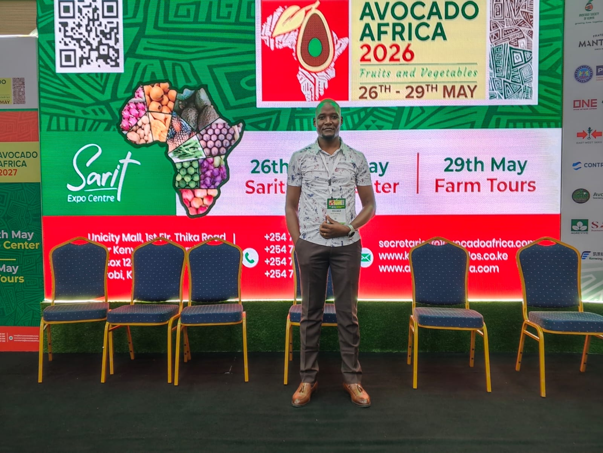
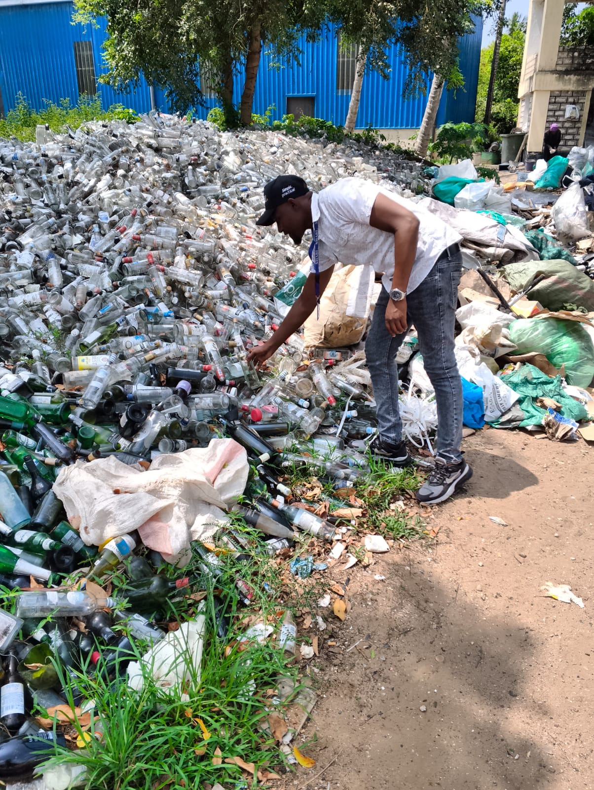
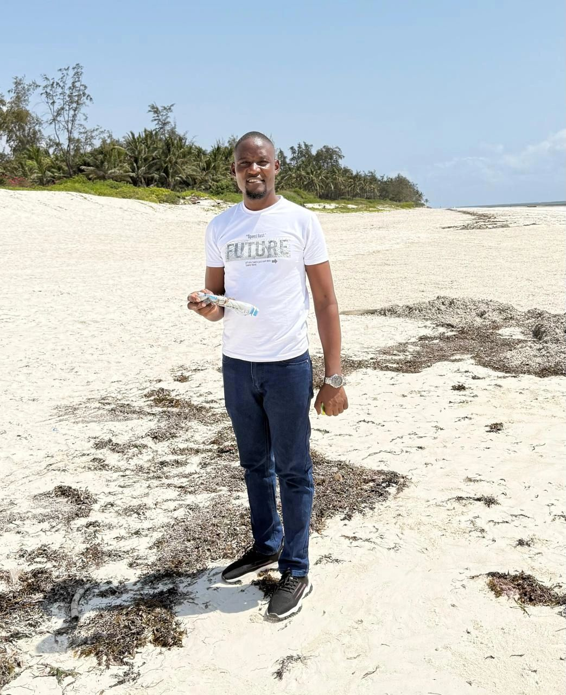
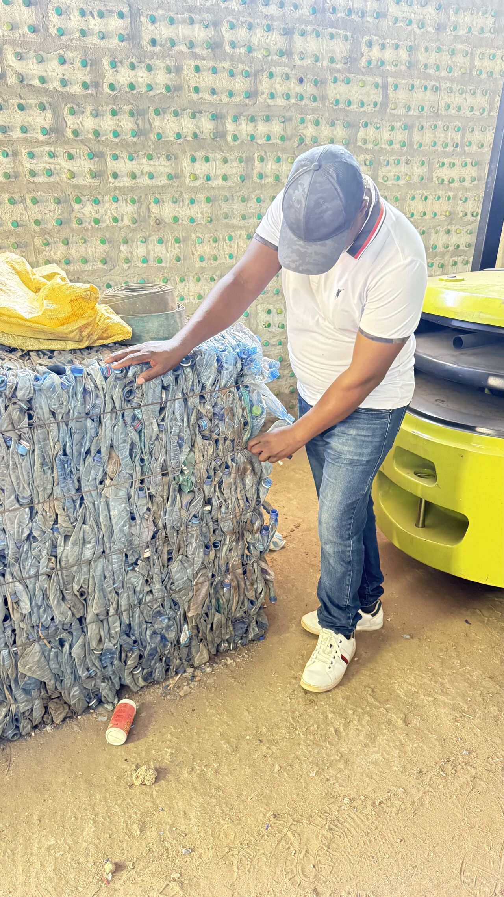
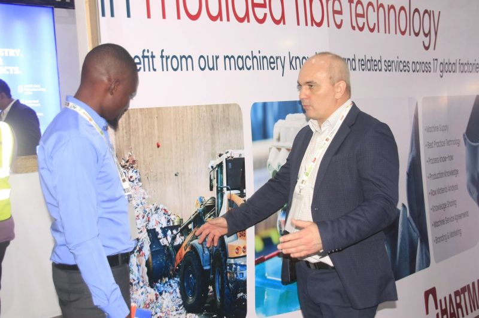
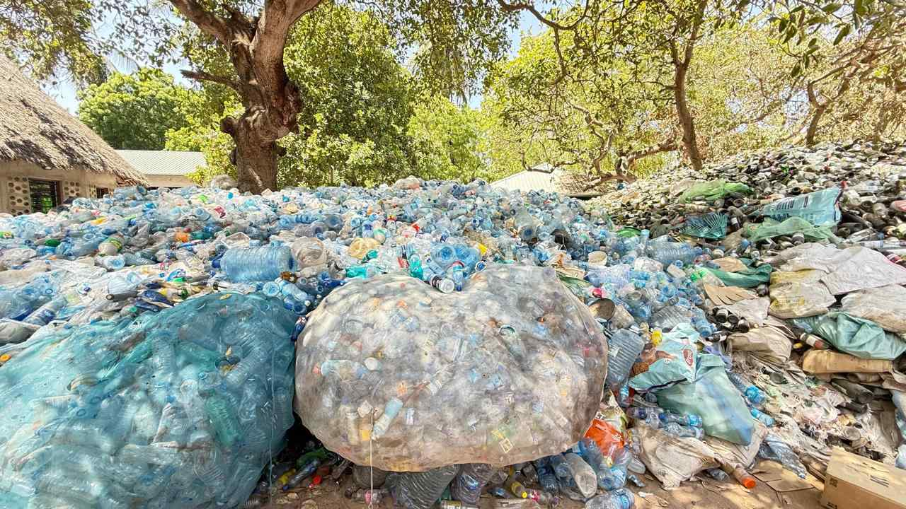
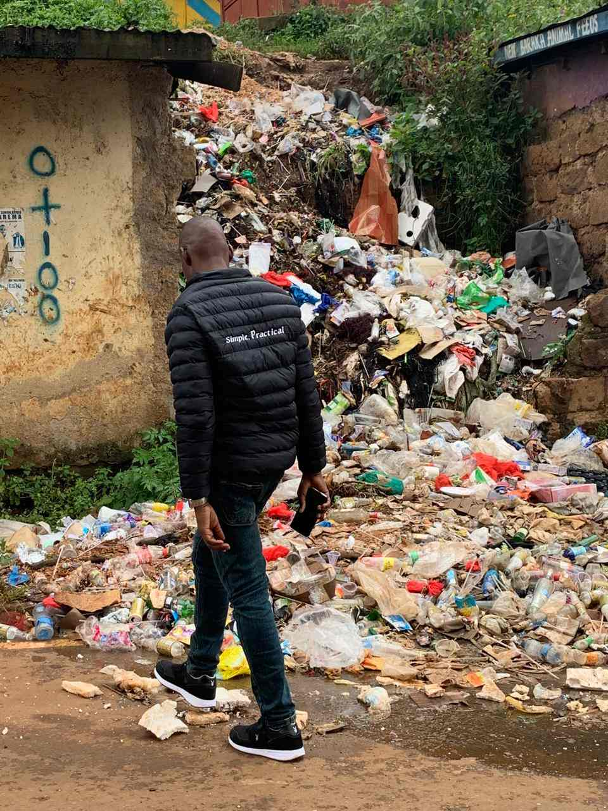
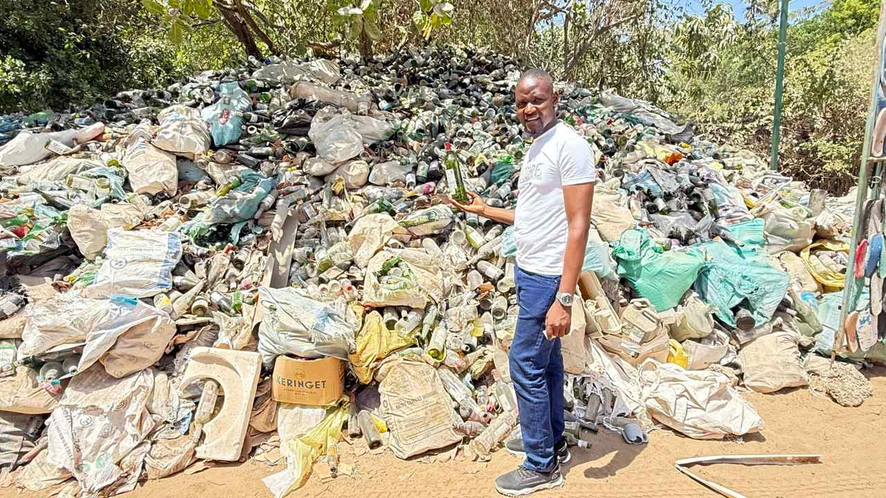
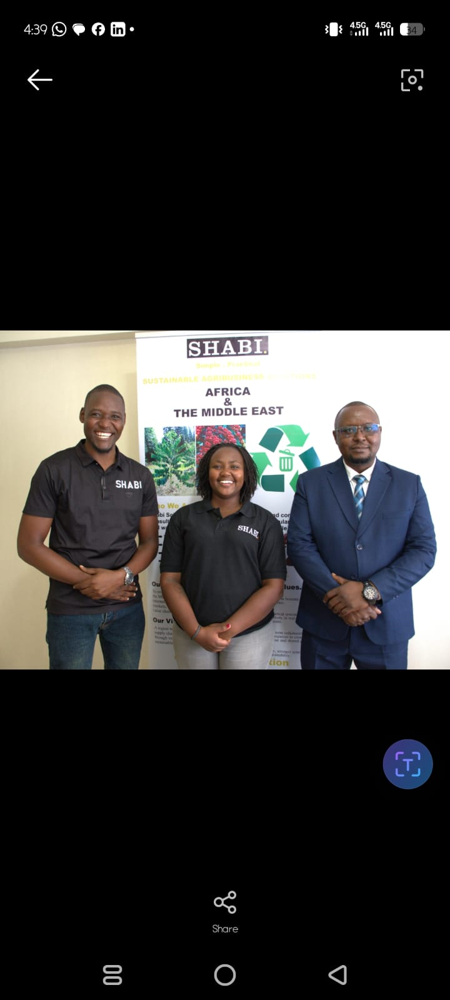

KCPE
2010
Brian Oduor — Operations Manager, Sustainability Leader, and Circular Economy Advocate

Sustainability Programs Completed
Circularity & Recycling Systems
Industry Influence & Leadership
Carbon Finance & Data Protection
Brian Oduor works within an environmental enterprise that is helping drive Africa's transition toward a circular economy, with a clear focus on turning waste into value and supporting responsible production and consumption.
Brian's work is best understood through outcomes. He supports the systems and relationships that make circular economy operations more coordinated, traceable, and effective.
Brian's mission is rooted in circular economy principles, sustainable resource management, and community-centered environmental responsibility. He is motivated by the belief that recycling ecosystems can create practical value when people, systems, and stakeholders work together with a shared sense of purpose.
Connecting informal waste pickers with formal value chains for inclusive growth.
Ensuring every kilogram of recovered material is accounted for and verified.
Designing end-to-end recovery pipelines that maximize material purity and value preservation.
Building resilient collection infrastructure that reaches underserved urban and rural communities.
Helping producers meet legal obligations through verifiable data and transparent reporting.
Shabi Solutions
Planning, coordinating, and optimizing day-to-day operations that connect communities to the circular economy. Responsibilities include collector onboarding and support, material-flow tracking, traceability, data reporting, partner relationships, and continuous operational improvement for EPR-aligned outcomes.
Fastruck leisure entertainment
Hospitality experience that adds service-oriented communication and practical workplace coordination to Brian's professional profile.
2010
2014
Diploma in Hospitality and Hotel Management, Business Administration and Management, General
February 2016 - November 2019
Bachelor's Degree, Social media marketer
December 2025 - February 2026
Introduced AI-assisted content generation, visual communication, prompt engineering, and creative design workflows using generative artificial intelligence tools.
Relevance: Expanded Brian's digital innovation skills and ability to leverage emerging technologies for communication, awareness campaigns, and sustainability-related storytelling.
Introduced the fundamentals of agribusiness management, value chains, agricultural markets, and sustainable agricultural enterprises.
Relevance: Strengthened Brian's understanding of sustainable economic systems and agricultural value chains, supporting his interest in sustainability and resource management.
Focused on digital communication, content creation, audience engagement, branding, and online marketing strategies.
Relevance: Enhanced Brian's ability to communicate sustainability initiatives, engage stakeholders, and promote environmental awareness through digital platforms.
Focused on transforming farming activities into commercially viable enterprises through planning, market analysis, and financial management.
Relevance: Enhanced Brian's appreciation of business-oriented approaches to sustainability and rural economic development.
Covered business model development, value proposition design, customer segmentation, revenue streams, and operational planning for agribusiness ventures.
Relevance: Provided practical skills in business planning and value-chain development, applicable to circular economy and sustainability projects.
Explored climate-resilient agricultural practices, risk mitigation strategies, and adaptation measures for changing environmental conditions.
Relevance: Expanded Brian's understanding of climate resilience and sustainable production systems, supporting his work in environmental sustainability.
Developed skills in negotiation, communication, problem-solving, stakeholder management, and conflict resolution.
Relevance: Strengthened Brian's ability to manage teams, engage stakeholders, and support collaborative sustainability initiatives.
Examined environmental challenges within the textile and fashion sector, including emissions reduction, resource efficiency, sustainable production, and circular economy principles.
Relevance: Enhanced Brian's understanding of sustainability challenges in global supply chains and reinforced his commitment to circular economy solutions.
Covered cybersecurity fundamentals, digital risk management, online safety practices, data protection, and responsible technology use.
Relevance: Improved Brian's awareness of digital risk management and responsible information handling within modern business environments.
Brian Oduor’s journey in sustainability and circular economy is not only marked by certificates, but by the tangible impact he creates across industries. His expertise transforms technical knowledge into systemic solutions that inspire confidence and drive change.
Brian advocates for responsible battery disposal and innovative recycling methods that recover critical materials while reducing environmental hazards. His work ensures energy storage systems remain sustainable and future‑ready.
Guiding decision‑makers toward sustainable production models, Brian embeds circularity into fashion supply chains. His insights help industries reduce waste, embrace eco‑design, and align with global sustainability standards.
Leveraging financial instruments to drive climate action, Brian enables businesses to align profitability with carbon reduction. His expertise in carbon markets positions him as a thought leader in climate‑aligned investment strategies.
Exploring innovative cooling technologies, Brian contributes to reducing emissions while creating new opportunities in carbon trading. His work bridges technology and finance to unlock sustainable growth.
Brian ensures that sustainability initiatives are underpinned by secure, compliant data practices. By reinforcing trust and governance, he strengthens the credibility of sustainability projects in the digital age.
Together, these experiences demonstrate Brian’s ability to connect technical expertise with systemic impact — positioning him as a professional whose portfolio is both detailed and convincing.
Brian Oduor’s field engagements demonstrate his ability to connect real challenges with systemic solutions. These case studies highlight his voice in sustainability and circular economy across Kenya.

Proud to represent SHABI Solutions at the Avocado Africa 2026 Expo held at the Sarit Centre, Nairobi. The event provided a great opportunity to engage with industry leaders, innovators, and stakeholders across the agri‑food value chain while discussing critical topics around waste management and sustainability.

During a mission assessing waste management practices, Brian observed how systems designed for a smaller population are collapsing under modern consumption. He advocates for circular resource flows — plastics as raw material, textiles as fiber recovery, and organic waste as compost — turning liabilities into economic assets.

Brian’s engagement with Eco World and ocean clean‑ups reinforced his belief that sustainability must move beyond boardrooms into real action. By connecting communities, recyclers, and institutions, he demonstrates how ocean‑bound waste can become industrial input and economic opportunity.

Tracing the journey of a plastic bottle from beach pollution to recycling plant transformation, Brian highlights how collaboration across collectors, recyclers, and businesses turns waste into value chains that support livelihoods and climate resilience.

In strategic discussions with Hartmann, Brian explored opportunities for carton and paper recovery to support molded fiber production. His role positions Shabi Solutions as a regional raw material partner, aligning local waste recovery with global ESG and EPR standards.

Brian Oduor at a glass waste collection site, promoting recycling and circular economy practices. His work demonstrates how recovered glass can be transformed into industrial input, reducing environmental impact and supporting local economies.

Brian assessed unmanaged urban waste, highlighting the need for community-driven segregation and sustainable disposal systems. His insights emphasize how policy frameworks and recycling partnerships can build resilient cities.

Brian showcased plastic waste accumulation, advocating for extended producer responsibility and circular economy interventions. His advocacy demonstrates how businesses can be held accountable for sustainable production and waste recovery.

Brian Oduor with Shabi Solutions CEO and Field Officer, showcasing Shabi’s leadership in sustainable agriculture and circular economy initiatives across Africa and the Middle East. This partnership highlights the organization’s focus on innovation, resource recovery, and community-driven sustainability.
Brian Oduor integrates circular economy principles with waste management innovation. His certifications demonstrate a commitment to battery recycling and end-of-life management, carbon finance and market systems, climate-smart agribusiness and adaptation, textile circularity, and digital safety. This portfolio reflects his dedication to building sustainable systems that balance environmental responsibility with practical business solutions.
Operations Manager at Shabi Solutions
Circular economy and EPR focus
Waste management and recycling practitioner
Nairobi, Kenya
Brian is open to professional networking, sustainability partnerships, circular economy discussions, waste management initiatives, recycling operations, and community impact conversations.
Postal Address
34412‑80118